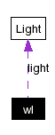

Dokumentacja struktury wl
#include <lightstablewidget.h>
Diagram wsp嗾pracy dla wl:

[legenda]Lista wszystkich sk쓰dowych.
|
Atrybuty publiczne |
|
Light * | light |
|
QCheckBox * | tableCheck |
|
QComboBox * | tableCombo |
Opis szczeg嗾owy
class: LightsTableWidget (.h)
widget ze 용iat쓰mi dziedzicz쎢y QTable
Dokumentacja dla tej struktury zosta쓰 wygenerowana z pliku:
Wygenerowano Mon Oct 18 15:28:30 2004 dla Gwell Modeler programem
 1.3.7
1.3.7